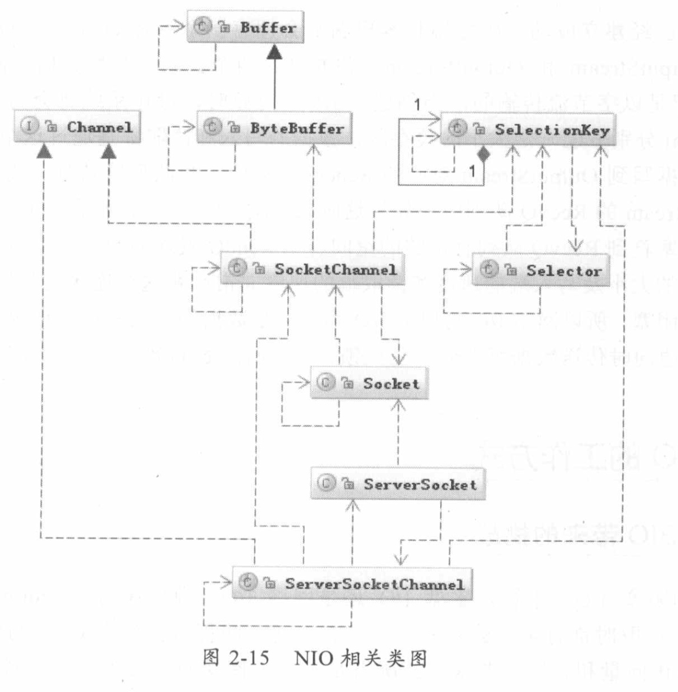
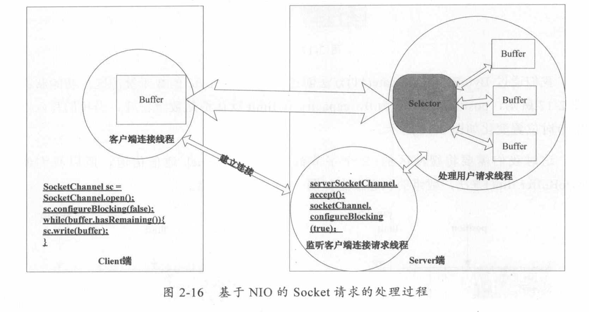
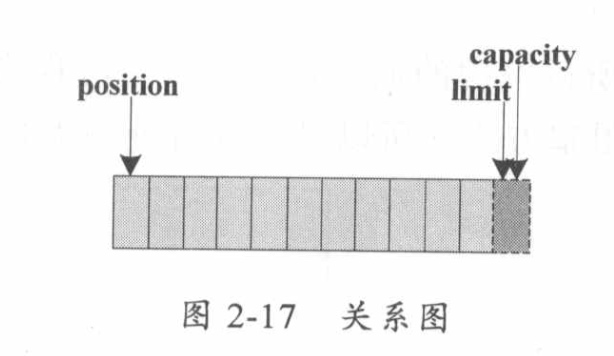
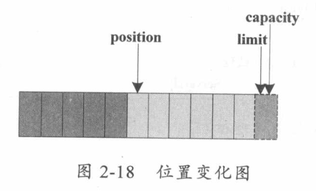
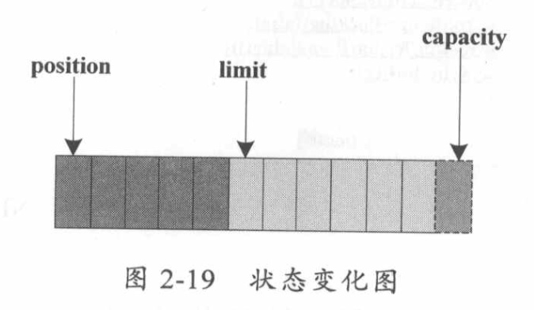
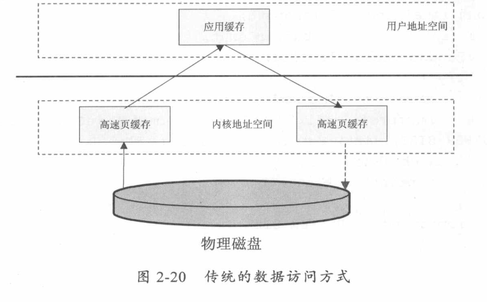
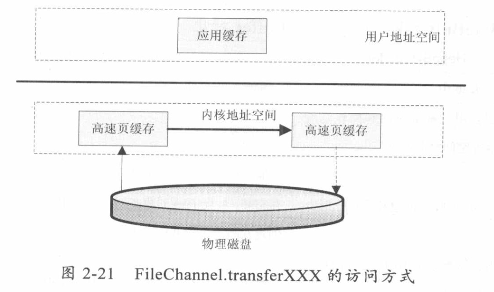

不管是磁盘还是网络传输，最小的存储单元都是字节，而不是字符，所以I/O操作的都是字节而不是字符。但是我们的程序中通常操作的数据都是字符形式的。
基于字节的I/O操作接口输入和输出分别是InputStream和OutputStream
写字符的I/O操作接口涉及的是write(char[] buf, int off, int len)
读字符的I/O操作是read(char[] buf, int off, int len)
字节与字符的转化接口
数据持久化或网络传输都是以字节进行的，所以必须要有字符到字节或者字节到字符的转化。
几种访问文件的方式
读取和写入文件I/O操作都调用操作系统提供的接口，因为磁盘设备是由操作系统管理的，应用程序要访问物理设备只能通过系统调用的方式来工作。
只要是系统调用就可能存在内核空间地址和用户空间地址切换的问题，这是操作系统为了保护系统本身的运行安全而将内核程序运行使用的内存空间和用户程序运行的内存空间隔离造成的。这样虽然保证了内核程序运行的安全性，但是也必然存在数据可能需要从内核空间向用户空间复制的问题。
如果遇到非常耗时的操作，如磁盘I/O，数据从磁盘复制到内核空间，然后又从内核空间复制到用户空间，将会非常缓慢。这时操作系统为了加速I/O访问，在内核空间使用缓存机制，也就是将从磁盘读取的文件按照一定的组织方式进行缓存。
标准访问文件方式
当应用程序调用read()接口时，操作系统检查内核的告诉缓存中有没有需要的数据。如果已经缓存了，那么就直接从缓存中返回；如果没有，从磁盘中读取，然后缓存在操作系统的缓存中。
当应用程序调用write()接口时，将数据从用户地址空间复制到内核地址空间的缓存中。这时，对用户程序来说，写操作就已经完成了，至于什么时候再写到磁盘中是有操作系统决定的，除非显式地调用sync同步命令
直接I/O方式
应用程序直接访问磁盘数据，而不经过操作系统内核数据缓冲区，这样做的目的就是减少一次从内核缓冲区到用户程序缓存的数据复制。
这种访问文件的方式通常是在对数据的缓存管理由应用程序实现的数据库管理程序中。（如数据库管理系统中，系统明确地知道应该缓存哪些数据，应该失效哪些数据，还可以对一些热点数据做预加载，提前将热点数据加载到内存，可以加速数据的访问效率；而操作系统并不知道哪些是热点数据，只是简单地缓存最近一次从磁盘读取的数据）
缺点：如果访问的数据不在应用程序缓存中，那么每次数据都会直接从磁盘加载。这种直接加载会非常缓慢。
同步访问文件方式
数据的读取和写入都是同步操作的，它与标准访问文件方式不同的是，只有当数据被成功写到磁盘时才返回给应用程序成功标志。
这种访问文件方式性能比较差，只有在一些对数据安全性要求比较高的场景中才会使用，而且通常这种操作方式的硬件都是定制的。
异步访问文件方式
当访问数据的线程发出请求之后，线程会接着去处理其他事情，而不是阻塞等待，当请求的数据返回后继续处理下面的操作。这种访问文件的方式可以明显地提高应用程序的效率，但是不会改变访问文件的效率。
内存映射方式
内存映射方式是指操作系统将内存中的某一块区域与磁盘中的文件关联起来，当要访问内存中一段数据时，转换为访问文件的某一段数据。这种方式的目的同样是减少数据从内核空间缓存到用户空间缓存的数据复制操作，因为这两个空间的数据是共享的。
Java访问磁盘文件
数据在磁盘中的唯一最小描述就是文件，也就是说上层应用程序只能通过文件来操作磁盘上的数据，文件也是操作系统和磁盘驱动器交互的最小单元。
Java中通常的File并不代表一个真实存在的文件对象，当你指定一个路径描述符时，它就会返回一个代表这个路径的一个虚拟对象，这个可能是一个真实存在的文件或者是一个包含多个文件的目录。
如何从磁盘读取一段文本字符：
当传入一个文件路径时，将会根据这个路径创建一个File对象来标识这个文件，然后根据这个File对象创建真正读取文件的操作对象，这时将会真正创建一个关联真实存在的磁盘文件的文件描述符FileDescriptor，通过这个对象可以直接控制这个磁盘文件。
由于我们需要读取的是字符格式，所以需要StreamDecoder类将byte解码为char格式。
Java序列化
Java序列化就是将一个对象转化成一串二进制表示的字节数组，通过保存或转移这些字节数据来达到持久化的目的。需要持久化，对象必须继承java.io.Serializable接口。
反序列化则是相反的过程，将这个字节数组再重新构造成对象。
网络I/O工作机制
TCP状态转化

1、CLOSED：起始点，在超时或者连接关闭时进入此状态
2、LISTEN：Server端在等待连接时的状态，Server端为此要调用Scok
影响网络传输的因素
将一份数据从一个地方正确地传输到另一个地方所需要的时间我们称为响应时间。影响这个响应时间的因素有很多。
TCP传输是一个停-等-停-等协议，传输放和接受方的步调要一致，要达到这个步调一致就要通过拥塞控制来调节。TCP在传输时会设定一个窗口（BDP，Brandwidth Delay Product），这个窗口的大小是由带宽和RTT（Round-Trip Time，数据在两端的来回时间，也就是响应时间）决定的。计算的公式是带宽（b/s） * RTT（s）。通过这个值可以得出理论上最优的TCP缓冲区的大小。
Java Socket的工作机制
Socket描述计算机之间完成相互通信的一种抽象功能。
打个比方，可以把Socket比作两个城市之间的交通工具，有了它，就可以在城市之间来回穿梭了、交通工具有多种，每种交通工具也有相应的交通规则。Socket也一样，也有多种。大部分情况我们使用的是基于TCP/IP的流套接字，它是一种稳定的通信协议。

主机A的应用程序要能和主机B的应用程序通信，必须通过Socket建立连接，而建立Socket连接必须由底层TCP/IP协议来建立TCP连接。建立TCP连接需要底层IP协议来寻址网络中的主机。网络层使用的IP协议可以帮助我们根据IP地址来找到目标主机，但是一台主机上可能运行着多个应用程序，如何才能与指定的应用程序通信就要通过TCP或UDP的地址，也就是端口号来指定了。
建立通信链路
当客户端要与服务端通信时，客户端首先要创建一个Socket实例，操作系统将为这个Socket实例分配一个没有被使用的本地端口号，并创建一个包含本地和远程地址和端口号的套接字数据结构，这个数据结构将一直保存在系统中直到这个连接关闭。
在创建Socket实例的构造函数正确返回之前，将要进行TCP的三次握手协议，TCP握手协议完成后，Socket实例对象将创建完成，否则将抛出IOException错误。
数据传输
当连接已经建立成功，服务端和客户端都会拥有一个Socket实例，每个Socket实例都有一个InputStream和OutputStream，并通过这两个对象来交换数据。
当创建Socket对象时，操作系统将会为InputStream和OutputStream分别分配一定大小的缓存区，数据的写入和读取都是通过这个缓存区完成的。
写入端将数据写到OutputStream对应的SendQ队列中，当队列填满时，数据将被转移到另一端InputStream的RecvQ队列中，如果这时RecvQ已经满了，那么OutputStream的write方法将会阻塞知道RecvQ队列有足够的空间容纳SendQ发送的数据。
NIO的工作方式
BIO带来的挑战
BIO即阻塞IO，不管是磁盘IO还是网络IO，数据在写入OutputStream或者从InputStream读取时都有可能会阻塞，一旦有阻塞，线程将会失去CPU的使用权。
NIO的工作机制

- 这里的Channel可以比作某种具体的交通工具，如汽车或高铁；
- 而Selector可以比作一个车站的车辆运行调度系统，它将负责监控每辆车的当前运行状态，是已经出站，还是在路上的。也就是它可以轮训每个Channel的状态。
- Buffer可以比作车上的座位。信息已经封装在了Socket里面，对你是透明的。
public void selector() throws IOException {
ByteBuffer buffer = ByteBuffer.allocate(1024);
Selector selector = Selector.open();
ServerSocketChannel ssc = ServerSocketChannel.open();
ssc.configureBlocking(false);
ssc.socket().bind(new InetSocketAddress(8080));
ssc.register(selector, SelectionKey.OP_ACCEPT);
while (true) {
Set selectedKeys = selector.selectedKeys();
Iterator it = selectedKeys.iterator();
while (it.hasNext()) {
SelectionKey key = (SelectionKey) it.next();
if ((key.readOps() & SelectionKey.OP_ACCEPT) == SelectionKey.OP_ACCEPT) {
ServerSocketChannel ssChannel = (ServerSocketChannel) key.channel();
SocketChannel sc = ssChannel.accept();
sc.configureBlocking(false);
sc.register(selector, SelectionKey.OP_READ);
it.remove();
}
}
}
}
- 调用
Selector的静态工厂创建一个选择器
- 创建一个服务端的
Channel，绑定到一个Socket对象，并把这个通信信道注册到选择器上，把这个通信信道设置为非阻塞模式
- 然后就可以调用
Selector的selectedKeys方法来检查已经注册在这个选择器上的所有通信信道是否有需要的事件发生。
- 如果有某个事件发生，将会返回所有的
SelectionKey，通过这个对象Channel方法就可以取得这个通信信道对象，从而可以读取通信的数据
- 而这里读取的数据是
Buffer，这个Buffer是我们可以控制的缓冲器

Selector可以同时监听一组通信信道（Channel）上的IO状态，前提是这个Selector已经注册到这些通信信道中。- 选择器
Selector可以调用select()方法检查已经注册的通信信道上IO是否已经准备好，如果没有一个信道IO状态有变化，那么select方法会阻塞等待或在超时后返回0。
- 如果有多个信道有数据，那么将会把这些数据分配到对应的数据
Buffer中。
- 所以关键的地方是，有一个线程来处理所有连接的数据交互，每个连接的数据交互都不是阻塞方式，所以可以同时处理大量的连接请求。
Buffer的工作方式
Selector检测到通信信道IO有数据传输时，通过select()取得SocketChannel，将数据读取或写入Buffer缓冲区。
Buffer可以简单地理解为一组基本数据类型的元素列表，它通过几个变量来保存这个数据的当前位置状态，也就是有四个索引。
capacity：缓冲区数组的总长度position：下一个要操作的数据元素的位置limit：缓冲区数组中不可操作的下一个元素的位置，limit<=capacitymark：用于记录当前�position的前一个位置或者默认是0

我们通过ByteBuffer.allocate(11)方法创建一个11个byte的数组缓冲区，初始状态时，position为0，capactiy和limit默认都是数组长度。
当我们写入5个字节时，位置变化如下：

这时，我们需要将缓冲区的5个字节数据写入Channel通信信道，所以我们调用byteBuffer.flip()方法

这时，底层操作系统就可以从缓冲区中正确读取这5个字节数据，并发送出去了。在下一次写数据之前，我们再调一下clear()方法，缓冲区的索引状态又回到初始位置。
当我们调用mark()时，它将记录当前position的前一个位置，当我们调用reset时，position将恢复mark记录下来的值。
通过Channel获取的IO数据首先要经过操作系统的Socket缓冲区再将数据复制到Buffer中，这个操作系统缓冲区就是底层的TCP协议关联的RecvQ或者SendQ队列。
从操作系统缓冲区到用户缓冲区复制数据比较耗性能，Buffer提供了另外一种直接操作操作系统缓冲区的方式，即ByteBuffer.allocateDirector(size)，这个方法返回的DirectByteBuffer就是与底层存储空间关联的缓冲区，它通过Native代码操作非JVM堆的内存空间。
NIO的数据访问方式
FileChannel.transferXXX
FileChannel.transferXXX与传统的访问文件方式相比可以减少数据从内核到用户空间的复制，数据直接在内核空间中移动。


FileChannel.map
将文件按照一定大小映射为内存区域，当程序访问这个内存区域时将直接操作这个文件数据，这种方式省去了数据从内核空间向用户空间复制的损耗。这种方式适合对大文件的只读性操作，如大文件的MD5校验。
适配器模式装饰器模式的区别
- 适配器模式的意义是要将一个接口转变成另外一个接口，它的目的是通过改变接口来达到重复使用的目的
- 装饰器模式不是要改变被装饰对象的接口，而是要保持原有的接口，但是增强原有对象的功能，或者改变原有对象的处理方式而提升性能。